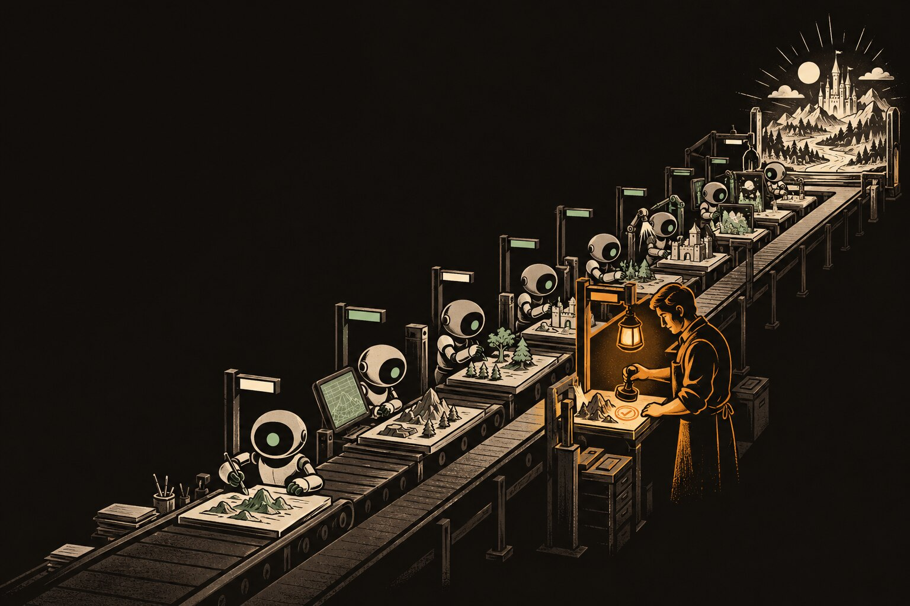
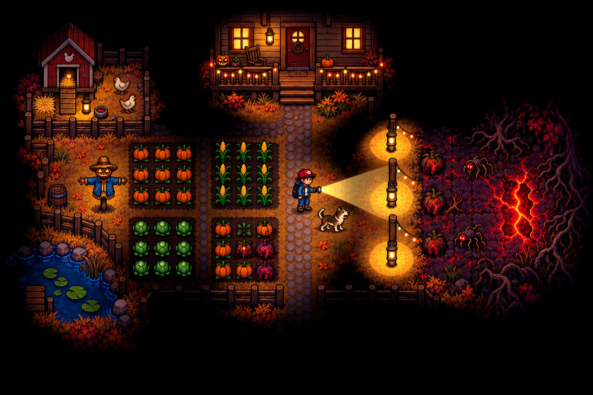
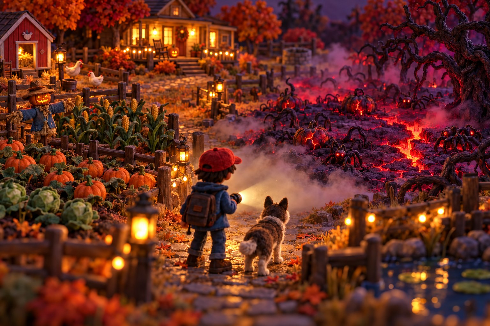

CONCEPT.md после интервью2–3 раунда вопросов с вариантами
1613 твоих + 3 на виду
решил тыдодумала нейронка — молчадопущение агента — на виду, можно поменять
Подробность концепта = насколько сильно нейронка будет додумывать игру
часть 1 · цена додумывания
Решения, которые приняла за тебя нейронка, — потенциальный источник проблем
персонаж двигается задом наперёдBlock Stars · март
пули боком повернутыRangers in Space · май
картинки концепта получились нейрослопныеАрго · концепты · октябрь
агент не видит проблемуГробница Ра · май
проблема 1
Игра, которую никто не просил
Пустоты заполнены AI-слопом
проблема 2
Ошибки, которые никто не видит
Модель пишет код вслепую: не видит, не слышит и не играет
Решения и настройка окружения — до работы. Инструменты — во время работы

часть 2 из 5
Пайплайн
этапы, критерии, инструменты
главная мысль
Цель — не игра. Цель — пайплайн, который делает игры
этапы
Порядок
Нельзя полировать то, чего ещё нет. Сначала решения — потом производство
критерии
Твоё «да»
Каждый этап кончается приёмкой: критерий выполнен, ты видишь результат и решаешь
инструменты
Глаза
Чтобы ты и агент видели одну и ту же игру — кадрами и числами
Все решения принимаешь ты. Остальное делает студия.принцип скилла studioigor
не только мой опыт · лучшие практики 2025–2026
Индустрия пришла к тем же решениям
проверка
«Дайте Claude проверку, которую он может запустить: тесты, сборку, скриншот. Это разница между сессией, за которой нужно следить, и сессией, за которой не нужно»
Anthropic · Claude Code best practices
$9 против $200
Один агент: 20 минут, $9 — «ничего не реагировало на ввод». Планировщик + генератор + оценщик: 6 часов, $200 — в игру можно играть
Anthropic Engineering · март 2026
план — источник истины
С одним PLANS.md Codex работал 7+ часов. Агент сам ведёт в нём прогресс и журнал решений: «перезапуститься можно с одним только планом»
OpenAI Cookbook · Using PLANS.md, 2025
код — малая часть
«Код — 10–20% ценности. Остальные 80–90% — структурированная коммуникация»
Sean Grove, OpenAI · «The New Code», 2025
коротко, а не много
Длинные файлы контекста снижают успех агента и добавляют 20%+ к цене. Совет — «только минимальные требования»
ETH Zurich · arXiv 2602.11988 · 2026
блокаут
«Дизайн-документ нельзя плейтестить. Блокаут — можно»
The Level Design Book
Этапы, короткие спеки, проверки и «глаза» — это уже консенсус, а не вкусовщина
карта пайплайна · скилл studioigor
10 этапов — 10 критериев
01
Идея
тыотвечаешь на 2–3 раунда вопросов, утверждаешь концепцию
## Scene 02 — Посадка · 0:20–0:45Что видим: низкий ракурс почти от земли. Корабль
на четырёх опорах садится на пыльную равнину
Камера: фиксированная точка у земли, лёгкая вибрация.
Дым и пыль проходят прямо перед объективом
Свет: плоско-пасмурный, верхний; снизу —
оранжевая вспышка посадочных двигателей
Звук: нарастающий рёв, сброс давления, шипение
гидравлики. После — оглушительная тишина
Приём:тишина после рёва — самый дешёвый звуковой контраст
10
сцен, ~3:45
52
реплики, 4 голоса
существо не должно быть видно целиком ни в одном кадре катсценыправило из брифа
результат
интро 236 секунд, 32 плана — агент работал точно по заданию
этап 1 · концепт
Концепт — набор правил и решений, а не эссе
правило
Одна строка — одно решение с числом
CONCEPT, DESIGN, STORY — короткие файлы. Решение поменялось — правим строку и пишем причину в Changelog
то же у исследователей
длинные файлы контекста снижают успех агента — ETH Zurich, 2026. А GDC ещё в 2010-м: «одностраничные дизайны» вместо библий, которые никто не читает — Stone Librande
эссе
Фонарик — ключевой элемент выживания, позволяющий игроку почувствовать себя защищённым посреди жуткой ночи и…
DESIGN.md · правила и решения
| M01 | Фонарик | mvp | Свет — граница |
луч держишь 1,5 с → тайл порчи очищен
батарейка 30 с · заряд на крыльце
порча: тайл каждые 4,0 с → 2,7 с к рассвету
фонари: 4 шт · свет 2,5 клетки, порча не входит
рассудок: −5/с на порче · −1,3/с в темноте
крыльцо +3/с · газировка +25
Абзац вместо строки — значит, решение ещё не принято
этап 2 · стиль · шаг 1
Стиль начинается с направления
1направление: фраза + правило2референсы на доске3проверка: как агент понял стиль
близкое · выбрано
Уютный пиксель-арт осенью
Правило: каждый пиксель — один плоский цвет, контур #2d1315

смелое
Видно только то, что в свете
Вне света — чёрное, свет становится геймплеем

заимствованное
Стоп-моушен, как «Бесподобный мистер Фокс»
Войлок, глина, ручной макет, туман из ваты
тывыбираешь направление, а не прилагательные
агент3–5 направлений
инструменткарточка направления: по одной фразе художник нарисует кадр
Лук-дев — одна сцена в финальном качестве до массового производства: свет, пост, герои, интерфейс
1 · агент собрал
скрипты прошли: сцена собирается, рендер есть, ошибок нет
2 · критики: «не то»
по кадрам видно, что до референса далеко — 8 раундов правок света и поста
3 · ты принимаешь результат
все решения записываются в файл и учитываются в будущих проверках
этап 5 · ассеты · анимация
Лаборатория — вместо «сделай анимацию»
прежде чем делать все, дай мне отсмотреть пару реплик
Нейтральная студия
Переключение клипов
Замеры всех состояний
тыотсматриваешь результат до массового производства
агентмеряет шаг, скорость ног, зазоры касаний
инструментлаборатория + замеры + разметка линией на кадре
этап 5 · ассеты · звук
Звук агент не слышит — значит, меряем
озвучка
ElevenLabs v3, Gemini TTS
sfx и музыка
ElevenLabs, Suno, CC0 или код
разборчивость
речь к фону — в каждой реплике
журнал звуков
какие действия «немые»
липсинк: что такое виземы
Визема — форма рта для группы звуков, хватает 15. Whisper → фонемы → виземы
Что агент не может услышать, он должен измерить
этап 6 · механики · спека
«Сочно» и «плавно» — это не спека
Слово агент поймёт как угодно. Число однозначно: его можно задать, замерить и проверить
вместо слова
пишем число
«отзывчиво»
≤100 мс до реакции, лучше 2–4 кадра
«сочный удар»
хит-стоп 30–100 мс
«тряска»
80–200 мс с затуханием
«с весом»
разгон 0,1–0,3 с герой · 3–6 с машина
«приятный прыжок»
0,3–0,45 с до верхней точки · койот ~0,1 с
DESIGN.md · M01 Фонарик · Creepy Farm
гипотеза: держу луч — порча отступает →
игрок чувствует «я могу продержаться эту ночь»
видно: бегает между полем и крыльцомпараметры: sim.js · K (BATT, CLEAN_T, BEAM_R)
feel: очистка 1,5 с · батарейка 30 с
луч 340 px, конус ±0,36 рад · с лучом ход ×0,8
антиреференс: «фонарик-пылесос»
приёмка: есть выбор «бегу чистить» или
«стою стреляю» · на «весело?» —
«Да, ещё»
Каждая строка спеки проверяется глазом или числом — иначе это пожелание
этап 6 · механики · инструмент
Каждой механике — своя тестовая сцена
Отдельная сцена для одной механики, запуск напрямую, без меню
Расстояния подписаны прямо в сцене
Панель тюнинга: крутишь числа спеки на лету, A/B одной клавишей
Арго: тестовая сцена стрельбы — отдача, вспышки, перезарядка
Хорошая спека позволяет снизить effort. Документация Anthropic: xhigh — для долгих агентных задач от 30 минут, low — для простых и для сабагентов
нюансы · реальные промпты
Промпты, которые управляют пайплайном
приёмка
прежде чем делать все, дай мне отсмотреть пару реплик
глаза
сделай простой html, где я увижу все юниты со всеми анимациями
память
исправь скилл, чтобы ошибка больше не повторялась
критерий готовности
/goal все задачи из папки @task выполнены
автономно на ночь
/loop 25m /gamemaker continue <slug>
классика
делай хорошо, плохо не делай
скиллы
Скилл — это упакованный пайплайн
01
Сделал задачу
в обычной сессии, без скилла
→
02
Упаковал
«сделай из этого скилл»
→
03
Ошибка
«исправь скилл, чтобы ошибка больше не повторялась»
→
04
Умнеет
каждый проект делает его лучше
studioigor
пайплайн этого доклада: 10 этапов, критерии, доска, автопилот
ref2game
играбельная 2D-сцена по референсу: арт генерирует нейронка, движение — код
3d-animator
риг, mocap, лица и липсинк — то, что обкатано на Арго
Добавляйте новые правила только после того, как заметили повторяющиеся ошибкиOpenAI · Codex best practices
studioigor учится в user-choices/ — только после твоего «да». Сам SKILL.md агент не трогаетправило 12 скилла
скиллы · анатомия
Что внутри скилла-пайплайна
studioigor/
SKILL.mdкогда включаться и процесс по фазамreferences/детали — читаются по фазе, не все сразуscripts/приёмка и рутина кодом: studio.py, board.pytemplates/CONCEPT, ART_BIBLE, захват кадров, ролиuser-choices/чему скилл научился с твоего «да»game/.studioigor/состояние игры: фаза, решения, критерии
Критерий — команда, а не утверждение
Скрипты не ошибаются на 134-м раунде
Доверяй тому, что хранится на диске, а не контексту
progressive disclosure
агент заранее знает только имя и описание скилла; тело и references грузятся, когда нужны